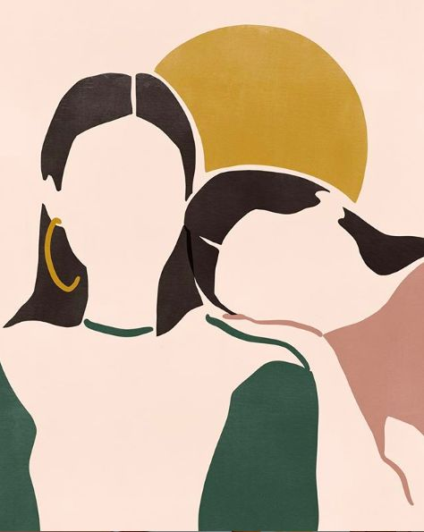

이 책은 외모와 관련된 자신감에 관해서 서술한 책이다. 이 책의 표지는 여성이 차지하고 있다. 왜 하필 여성일까? 여성이 많이 외모를 가꾸고 관심이 많은 것은 사실이다. 하지만 현재는 많은 남성들도 자신을 가꾸고 아름다워지기 위해 노력하는 시대이다. 이러한 현실에도 불구하고 이 책은 그저 외모와 관련된 책이라는 생각으로 표지를 위와 같이 장식하였다.

정치적 관점
여자는 아름답게 꾸미고 남자는 꾸미는 것을 부끄러워한다는 것은 오래전 얘기이다. 요즘은 미용 전문 유튜버도 여자가 아닌 남자의 성별을 가지고도 활동하는 사람이 많다. 또한 화장 전문가나 여러 디자이너 등도 남자의 비율이 높아지고 있다. 하지만 현재도 남자가 화장하고 꾸미는 것을 좋아한다고 하면 이상한 시선으로 보는 사람들이 더러 있다. 이는 사회가 만들어낸 부정적인 현실이다.
나의 생각
외모는 남녀가리지 않고 가꾸는 것이라고 생각한다. 하지만 이책의 표지만 본다면 과연 그것이 맞나에 대한 의문점이 생긴다.